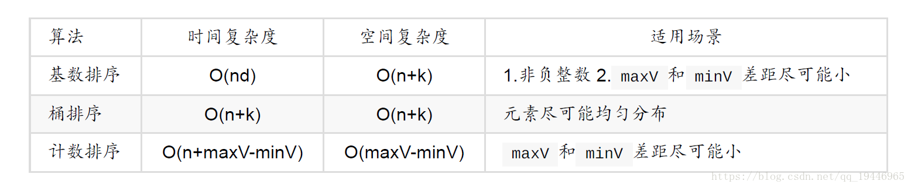
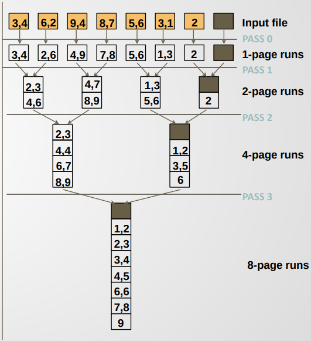
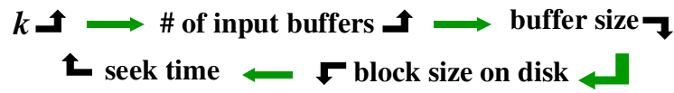
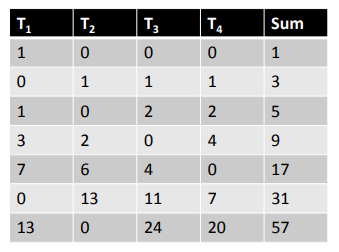
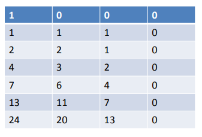
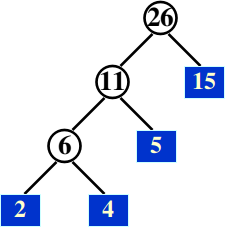

排序算法
虽然说选择对数据进行排序，一般的编程语言标准库都会提供sort方法，调用它又快又简单。但是了解排序算法基本算是算法的入门课了，而且很实用。


图源网络
O(n^2)的排序算法
O(n^2)的排序算法都很简单。
冒泡排序、选择排序、插入排序、希尔排序。
插入排序
比如我们整理扑克牌。
void InsertionSort ( ElementType A[ ], int N )
{
int j, P;
ElementType Tmp;
for ( P = 1; P < N; P++ )
{
Tmp = A[ P ]; /* the next coming card */
for ( j = P; j > 0 && A[ j - 1 ] > Tmp; j-- )
A[ j ] = A[ j - 1 ];
/* shift sorted cards to provide a position for the new coming card */
A[ j ] = Tmp; /* place the new card at the proper position */
} /* end for-P-loop */
}
希尔排序
是不稳定的排序方法，虽然比不上快排，但是代码简单。思想是一次消除多个逆序，改进版的Insertion Sort。Define an increment sequence $h_1 < h_2 < … < h_t ( h_1 = 1 )$，Define an $h_k$-sort at each phase for k = t, t-1, …, 1。
通常我们取$h_t=\lfloor N/2 \rfloor, h_k=\lfloor h_{k+1} \rfloor$（被称为希尔增量）但是这不是最高效的增量序列，最差的情况会退化成$O(N^2)$。
取$h_k=2^k-1$（被称为Hibbard增量）会稍微好一点，最差的情况时间复杂度为$O(N^{\frac{3}{2}})$，平均时间为$O(N^{\frac{7}{6}})$。
void Shellsort( ElementType A[ ], int N )
{
int i, j, Increment;
ElementType Tmp;
for ( Increment = N / 2; Increment > 0; Increment /= 2 )
/*h sequence */
for ( i = Increment; i < N; i++ ) { /* insertion sort */
Tmp = A[ i ];
for ( j = i; j >= Increment; j - = Increment )
if( Tmp < A[ j - Increment ] )
A[ j ] = A[ j - Increment ];
else
break;
A[ j ] = Tmp;
} /* end for-I and for-Increment loops */
}
冒泡排序
太简单了，不介绍了。每次把最小的一个冒泡到前面。
for (int time = 0; time < N-1; time++)
for (int index = N; index > time; index--) {
if (a[index]<a[index-1]) {
swap(&a[index],&a[index-1]);
}
}
选择排序
太简单了，不介绍了。每次把最小的一个选到前面。
for (int i = 0; i < N-1; i++)
for (int j = i+1; j < N; j++) {
if (a[i]>a[j]) {
swap(&a[i],&a[j]);
}
}
O(nlogn)的排序算法
比较类排序算法的时间复杂度最好就是O(nlogn)。
快速排序
鼎鼎有名的快速排序。最坏情况的时间复杂度是$O(N^2)$，平均情况是$O(NlogN)$。是一种不稳定的算法。基本思路是分治法。
具体的实现（从小到大排序）
void Qsort( ElementType A[ ], int Left, int Right )
{
int i, j;
ElementType Pivot;
if ( Left + Cutoff <= Right ) { /* if the sequence is not too short */
Pivot = Median3( A, Left, Right ); /* select pivot */
/* why not set Left+1 and Right-2? Because after we ++i and --j */
i = Left; j = Right–1;
for( ; ; ) {
/* scan from left ,when loop ends, A[i]>=Pivot */
while ( A[++i] < Pivot );
/* scan from right */
while ( A[––j] > Pivot );
if ( i < j )
Swap( &A[ i ], &A[ j ] ); /* adjust partition */
else
break; /* partition done */
}
Swap( &A[ i ], &A[ Right - 1 ] ); /* restore pivot */
Qsort( A, Left, i - 1 ); /* recursively sort left part */
Qsort( A, i + 1, Right ); /* recursively sort right part */
} /* end if - the sequence is long */
else /* do an insertion sort on the short subarray */
InsertionSort( A + Left, Right - Left + 1 );
}
运用快排的思想，可以很好的解决找第k大元素的方法。我们每一进行qsort，可以找出第m大的元素，如果m==k，那么就正好找到了；如果m<k继续找后面一部分；如果m>k继续找前面一部分。
堆排序
首先我们考虑一种直白的方法：
- 把需要排序的元素建一个最小堆（时间复杂度为O(N)）。
- 每次把对堆进行DeleteMin操作，把Min存入另一个数组H。
- 我们获得了一个排好序的数组H。
Algorithm 1:
{
BuildHeap( H ); /* O(N) */
for ( i=0; i<N; i++ )
TmpH[ i ] = DeleteMin( H ); /* O(lg(N)) */
for ( i=0; i<N; i++ )
H[ i ] = TmpH[ i ]; /* O(1) */
}
这是改进版的Heap Sort，可以省了额外创建一个数组的空间：
- 仍然是把需要排序的元素建一个最小堆。
- 注意到其实我们每次DeleteMin都会让堆的规模减一，所以我们把DeleteMin变成和最后一个元素进行交换，然后Percolate Down。
id Heapsort( ElementType A[ ], int N )
{
int i;
for ( i = N / 2; i >= 0; i-- ) /* BuildHeap */
PercDown( A, i, N );
for ( i = N - 1; i > 0; i-- ) {
Swap( &A[ 0 ], &A[ i ] ); /* DeleteMax */
PercDown( A, 0, i );
}
归并排序
二分法。对于internal sorting很少使用，但是对external sorting经常使用。
时间复杂度是O(NlogN)，空间复杂度是O(NlogN)，可以是稳定的。
传统的Merge Sort算法主要是要申请额外的空间这个部分Overhead很大，下面的例程就是为了避免这个问题。
void merge_pass( ElementType list[], ElementType sorted[], int N, const int length )
{
int left=0,mid=length-1,right=2*length-1;
int i,j,k;
if (right>=N) right=N-1;
while (mid<N)
{
i=j=k=0;
//Merge [left,mid] and [mid+1,right]
while (i<length && j<right-mid)
if (list[i+left]<list[j+mid+1]) sorted[left+k++] = list[i++ +left];
else sorted[left+k++] = list[j++ +mid+1];
while (i<length) sorted[left+k++] = list[i++ +left];
while (j<right-mid) sorted[left+k++] = list[j++ +mid+1];
left+=2*length;
mid+=2*length;
right+=2*length;
if (right>=N) right=N-1;
}
}
void merge_sort( ElementType list[], int N )
{
ElementType extra[MAXN]; /* the extra space required */
int length = 1; /* current length of sublist being merged */
while( length < N ) {
merge_pass( list, extra, N, length ); /* merge list into extra */
length *= 2;
merge_pass( extra, list, N, length ); /* merge extra back to list */
length *= 2;
}
}
归并排序适合大数据的排序
Tim Sort
Tim sort 是一种混合稳定的排序算法，源自合并排序和插入排序，旨在较好地处理真实世界中各种各样的数据。Java的Arrays.sort()、Python的sort()、Rust的sort都采用了Tim Sort算法。1
非比较类排序算法
桶排序
思路是2
- 将待排序元素划分到不同的痛。先扫描一遍序列求出最大值 maxV 和最小值 minV ，设桶的个数为 k ，则把区间 [minV, maxV] 均匀划分成 k 个区间，每个区间就是一个桶。将序列中的元素分配到各自的桶。
- 对每个桶内的元素进行排序。可以选择任意一种排序算法。
- 将各个桶中的元素合并成一个大的有序序列。
- 假设数据是均匀分布的，则每个桶的元素平均个数为 $n/k $。假设选择用快速排序对每个桶内的元素进行排序，那么每次排序的时间复杂度为 $O(n/klog(n/k))$ 。总的时间复杂度为 $O(n)+O(k)O(n/klog(n/k)) = O(nlog(n/k))$ 。当 k 接近于 n 时，桶排序的时间复杂度就可以金斯认为是 O(n) 的。即桶越多，时间效率就越高，而桶越多，空间就越大。
根据桶排序的思路，可以得到计数排序，把区间[minV, maxV]中的每一个数单独给出一个区间。这样一趟扫描就排好了序，其实就是统计每一个数字出现的次数。显然，这种排序方法适合数字区间不大的情况。
基数排序
他的思路是，从**最低位(最低位和进制有关的说)开始，依次进行一次"桶排序"。这样从最低位一直到最高位(也可以是从最高位到最低位，但是从低到高一般比较好)**排序完成以后，整个序列就变成了一个有序序列。举个例子会清楚一点
假设要排序的数字序列为 0x1 0xf 0x2d 0x323 0x14，从最低位开始排序
- 第一次排序(0x1 0x14) (0x323) (0x2d) (0xf)
- 第二次排序(0x01 0x0f) (0x14) (0x323 0x2d)
- 第三次排序(0x001 0x00f 0x014 0x02d) (0x323)
- 假设数据类型是u32，那就一共进行8次排序（一次4位）。你也可以先扫描一遍看看最大的值是多少然后决定进行几次排序。
时间复杂度为$O(kn)$，n是排序元素个数，k是位数。空间复杂度为$O(k+n)$。选择合适的进制下，k一般不大于logn，基数排序一般要快过基于比较的排序。
所以为什么一般编程语言标准库的排序算法还是基于排序的呢？因为如果要使用基数排序我们需要让元素有"基数"这个概念，而比较排序只需要"比较"这个概念，后者实现简单直接。而且比较排序的算法性能一般也够用了。3
外排序
主要是为了解决很多数据以至于内存中放不下的情况。评价普通的排序只需要考虑时间复杂度，评价外排序要考虑
- seek time $O(pass)$ 寻道次数
- time to read or write one block of records
- internal sort M records
- merge N records from input buffer to output buffer
基本的外排序思想
假设我们的内存能容纳M个数据，我们一共有N个数据存储在Tape 1上。
- 依次读取M个数据，在主存中进行排序。然后分别写入Tape 2和Tape 3。从这时候开始，数据被分成了N/M个有序的顺串。
- 然后合并T2+T3=>T1+T4， T1+T4=>T2+T3。每次我们都可以将块的数量/2
- 直到两边块的数量都是1,然后合并到一个Tape上。排序结束。
比如下面这个例子，Memory里可以容纳2个数据。

所以我们不难发现，pass = $1+log_2(N/M)$。1指的是第一次读取全部的数据进行排序，$log_2(N/M)$指的是后面归并的过程。
k-way merge
可以减小pass，减小seek次数。上面的其实就是2-way merge。对于k-way merge ，$pass=1+log_k(N/M)$。
过程：以3-way 为例，从3个磁盘中读取出一个数，维护一个（我觉得MinHeap也可以？不知道为什么是）Loser tree。Tree的根节点一定是最小的元素，把它写出来，读一个新的进去。如此反复。
In general, for a k-way merge we need 2k input buffers and 2 output buffers for parallel operations.

Polyphase Merge
上面提到的k-way Merge 需要2k个磁带，事实上我们只使用K+1个磁带也可以完成工作。比如下面的2路归并排序，我们只需要三个磁盘，按照斐波那契数列的规则把初始数据分到磁盘上。可以通过填充的方式变成斐波那契数个数据。
对于一般的k，$F(k)(n) = F(k)(n - 1) + F(k)(n - 2) + ... + F(k)(n - k)$, with the appropriate initial conditions $F(k)(i) = 0, 0\le i\le k - 2, F(k)(k - 1) =1$。
T1 0 13 5 0 3 1 0 1
T2 21 8 0 5 2 0 1 0
T3 13 0 8 3 0 2 1 0
k=3一个例子：此时的斐波那契数列为 0 0 1 1 2 4 7 13 24 ... 所以下面这个黑色的表和斐波那契数列有什么关系？我们重新排列，把每一行的0排到后面去，然后竖着看：

Replacement selection
我们之前构造顺串的做法是，读取M个元素，在内存中排好序，输出到磁带。所以我们会得到$N/M$个顺串。但其实这个步骤是可以优化的，每次把一个记录写回磁盘之后，又可以再读入新的数据。
T[1] = {81,94,11,96,12,35,17,99,28,58,41,75,15}
如果按照标准分法3-way merge，会是
T[2] = {11,81,94; 41,58,75;}
T[3] = {12,35,96; 15;}
T[4] = {17,28,99;}
H[1] H[2] H[3] OUTPUT NEXT
Run 2 12 35 17 12 99
17 35 99 17 28
28 99 35 28 58
35 99 58 35 41
41 99 58 41 15*
58 99 15* 58 end of tape
99 15* 99
15* End of Run. Rebuild Heap 当然，如果数据读完了，一轮也就结束了
---
Run 3 15 15
所以我们得到
T[2] = {11,81,95,96;}
T[3] = {12,17,28,35,41,58,75,99;}
T[4] = {15;}
通过这种方式得到的顺串，平均长度是2M。
这样得到的串的长度就不是相等的了，有什么好办法减小顺串的Merge time呢？答案是Huffman tree。
Suppose we have 4 runs of length 2, 4, 5, and 15, respectively. How can we arrange the merging to obtain minimum merge times?  Total merge time = O ( the weighted external path length )
其实我挺好奇，我们真的可以决定merge的顺序吗？因为同一个磁带上的两个顺串如果相互merge的话基本上就是把磁带当成一个随机访问而不是顺序访问了。不过不管了。
参考链接：
https://blog.csdn.net/qq_19446965/article/details/81517552
维基百科 Timsort https://en.wikipedia.org/wiki/Timsort
为什么时效上具有明显优势的基数排序（radix sort）没有快速排序流行？https://www.zhihu.com/question/27064078